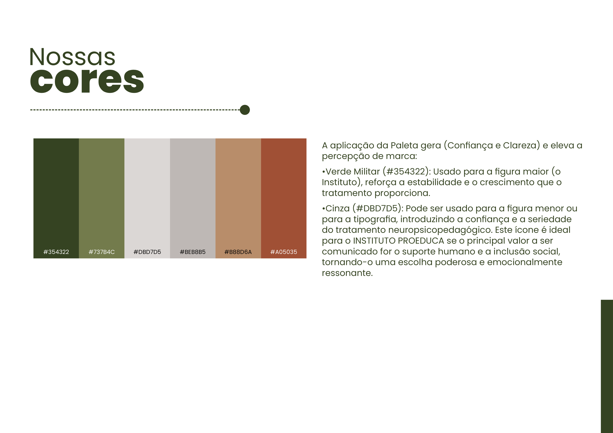
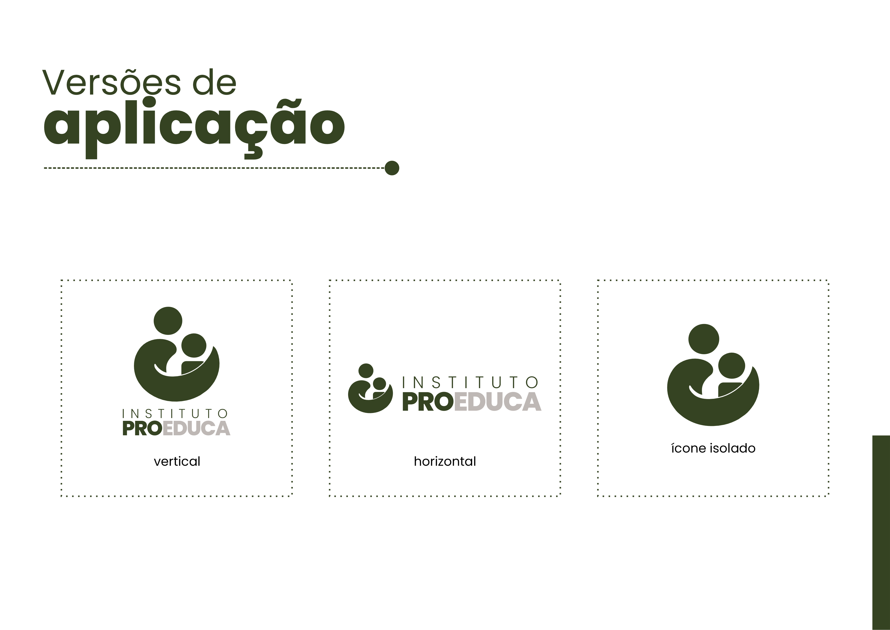
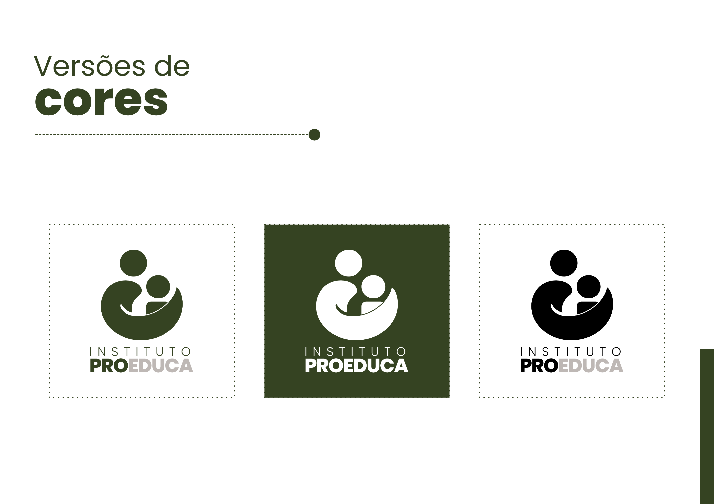

PROEDUCA

OSC que ajuda crianças carentes no diagnóstico de TEA.
A identidade visual do INSTITUTO PROEDUCA é uma marca minimalista e sofisticada que utiliza a força do Verde Militar e do Cinza para comunicar Qualidade e Confiança, enquanto o ícone do Abraço garante o Acolhimento e a Acessibilidade necessários para sua missão.
Galeria do Projeto



